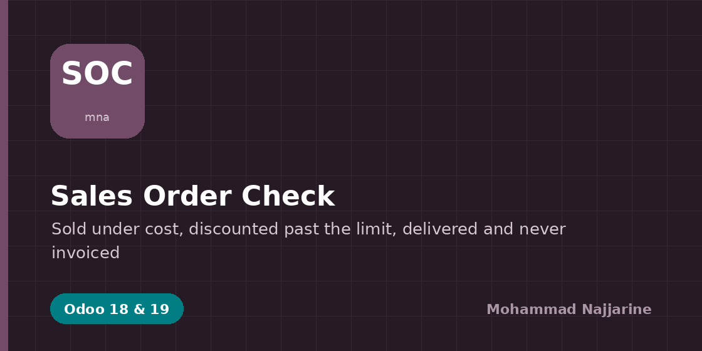
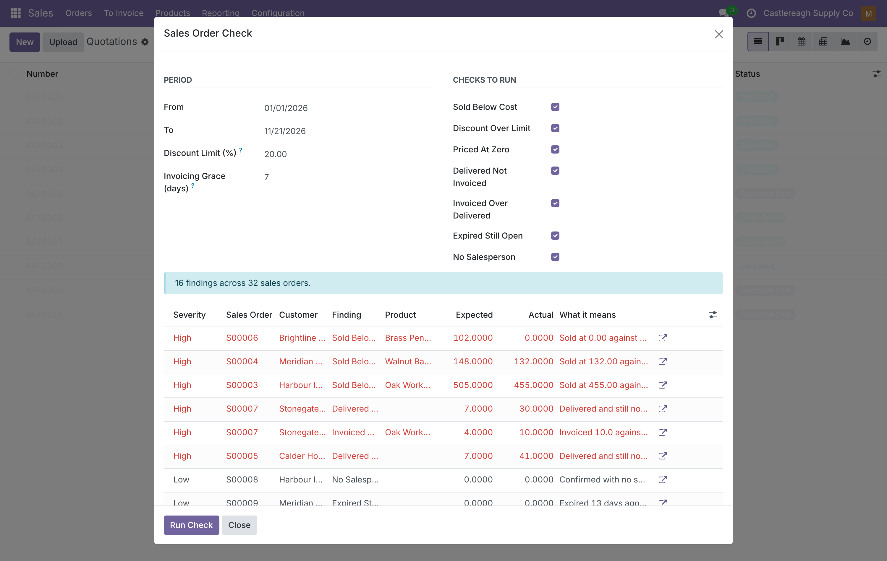
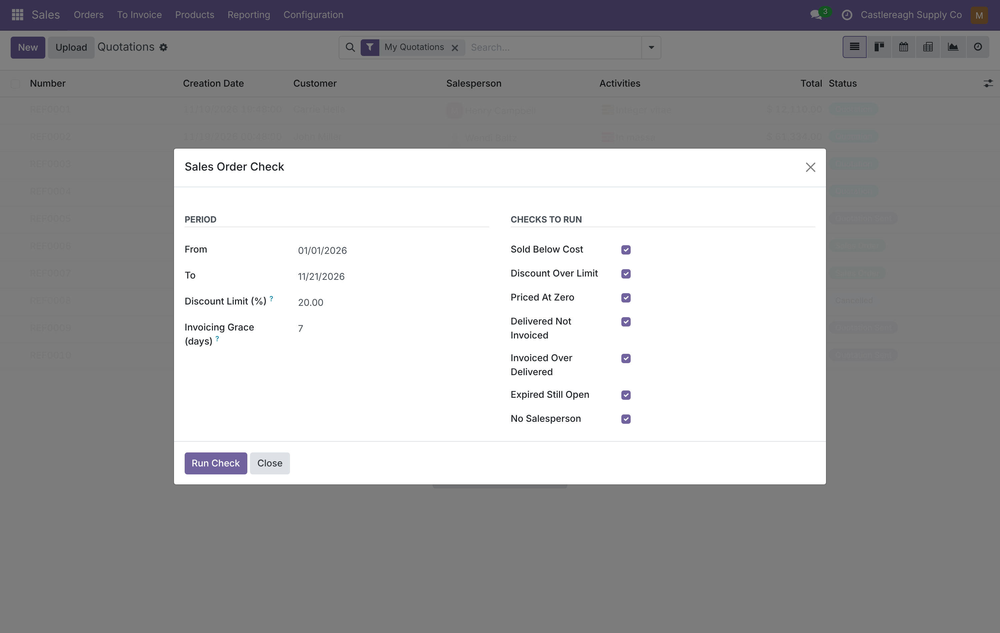

A sales order can go wrong quietly. A line goes out at a price under what the goods cost and the loss never surfaces until somebody adds up the year. A discount of forty percent is entered because the customer pushed and nobody was asked. Goods ship and the invoice is never raised, so the revenue is real and the receivable is not.
None of this throws an error in Odoo. It turns up a quarter later as a margin nobody believes and a debtors list that is missing money. This is one screen that goes looking for it.
Free and open source under LGPL-3.
Measured on the price after the discount, against the cost, with the loss on the line worked out for you.
You set the limit. Each finding carries the discount given and the money it gave up.
Goods gone, invoice never raised, once a grace period you set has run out.
More billed than ever went out of the door, which is the one a customer finds for you.
A line at zero with no discount on it, which is a price that was never filled in.
Quotations past their own validity date still sitting open, and confirmed orders with no salesperson.
Thirty two orders here and sixteen findings, with the healthy ones not mentioned at all. A check that fires on good data gets switched off within a week, so every rule is written to stay silent on a clean order.

Run the whole set or just the one you are chasing, over any period, with your discount limit and your invoicing grace period in your hands.

A free line is entered as a full discount, so a zero price with a discount on it is not reported. Only a price that was never set is.
A line whose cost is recorded as zero has nothing to compare against, so it is passed over rather than reported as losing money.
A line sold by the box is compared against the cost of a box, not the cost of one unit. Cost comes from the per-line purchase price when Sales Margin is installed, which is the cost as at the order rather than today's.
Services and anything invoiced on the ordered quantity are not measured against what was delivered, because for those that is not what invoicing follows.
| Odoo | 18.0 and 19.0, Community or Enterprise |
| Depends on | Sales only, with no Enterprise dependency |
| Licence | LGPL-3, free |
Written and maintained by Mohammad Najjarine, Odoo consultant. Questions, bug reports and customisation requests are answered.
Message me on WhatsApp Code and issues on GitHub
Phone and WhatsApp +961 71 835279